S-1 · Blank flag fabric
CandidateBroad billowing folds and clean contrast. Map the exact flag vector later.
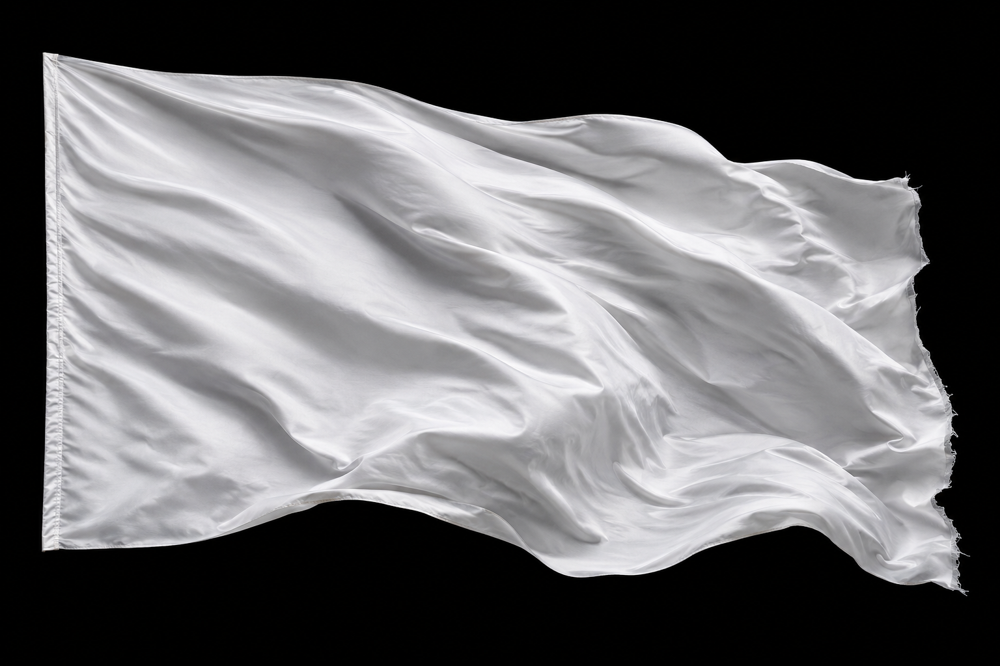
S-1_v1.png Original PNG · click to inspect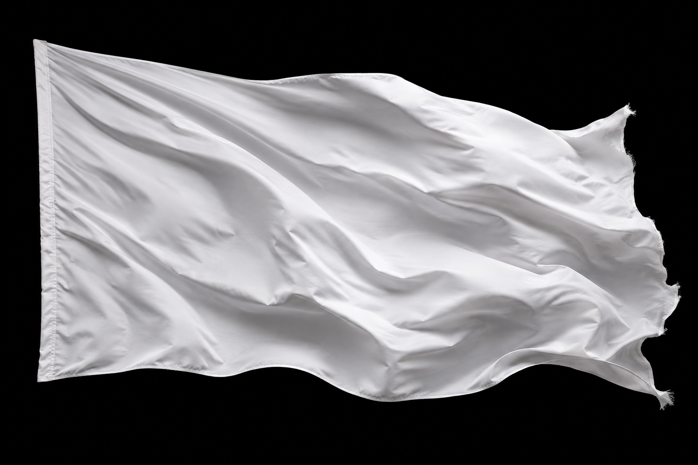
S-1_v2.png · Preferred candidateOriginal PNG · click to inspectC2-A · Palace at blue hour
Replace with real photoBoth variants alter architectural details. Neither passes the exact-reference gate. Use the real palace source; it crops the outer wings, so a wider source is still needed if the whole building must appear.
C2-A_v1.png Original PNG · click to inspectC2-A_v2.png Original PNG · click to inspect C2-B · Classified dossier
CandidateBetter margins around folder, paper and ribbon. Blank emblem and label areas.
C2-B_v1.png Original PNG · click to inspectC2-B_v2.png · Preferred candidateOriginal PNG · click to inspect C2-C · Two security officers
Detail reviewv3 improves straight arms and side clearance. Framing is wider than head-to-knees. Badges, insignia and camouflage remain approximate; verify before use.
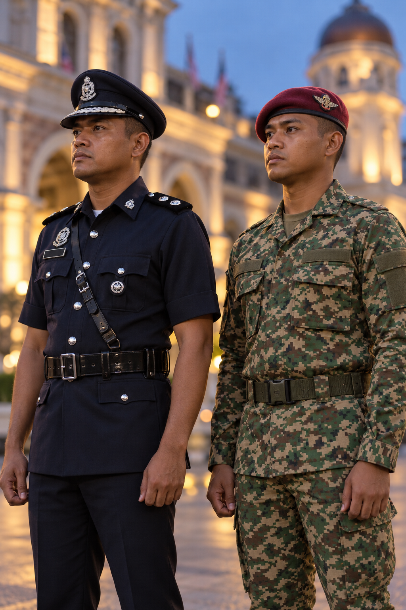
C2-C_v1.png Original PNG · click to inspect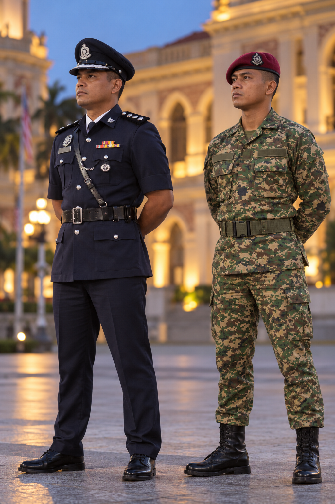
C2-C_v2.png Original PNG · click to inspect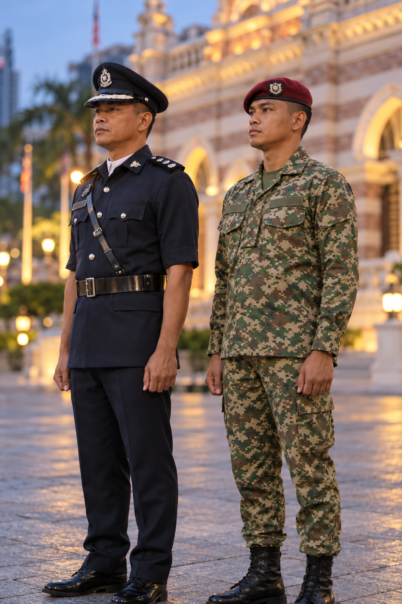
C2-C_v3.png · Preferred candidateOriginal PNG · click to inspectC2-D · Three Su-30MKM jets
Detail reviewv2 has three separated planes in a triangular V. v1 is an echelon rather than the requested V. Verify airframe and small markings against the reference.
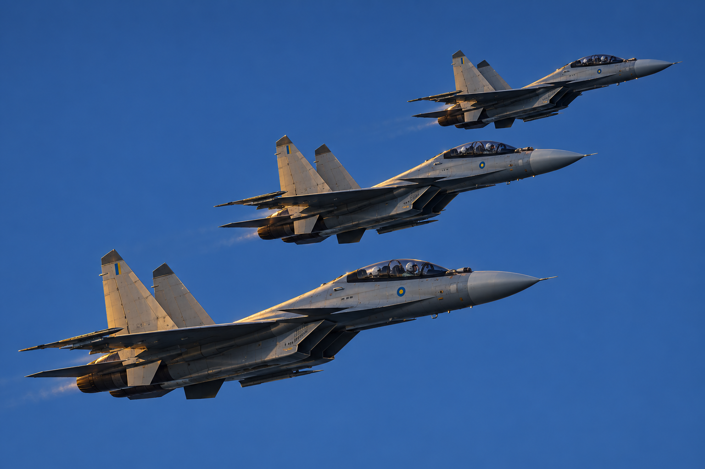
C2-D_v1.png Original PNG · click to inspect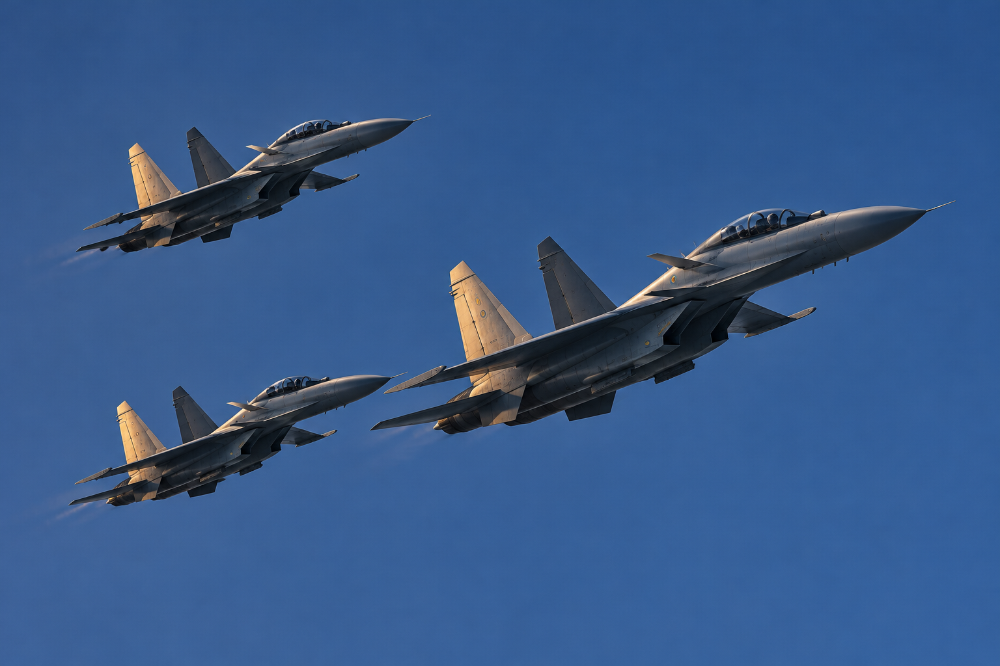
C2-D_v2.png · Preferred candidateOriginal PNG · click to inspectC2-E · Cybersecurity researcher
Candidatev4 corrects tablet orientation and restores shoulder/elbow clearance. Earlier variants have awkward screen direction or cropped framing.
C2-E_v1.png Original PNG · click to inspectC2-E_v2.png Original PNG · click to inspectC2-E_v3.png Original PNG · click to inspectC2-E_v4.png · Preferred candidateOriginal PNG · click to inspect C2-F · Student using phone
Detail reviewv1 has the requested leftward orientation but little margin by the right shoulder. v2 has more space but turns the other way.
C2-F_v1.png · Preferred candidateOriginal PNG · click to inspectC2-F_v2.png Original PNG · click to inspect C1-A1 · Clear sky
Candidatev2 has more clear blue space and fewer clouds.
C1-A1_v1.png Original PNG · click to inspectC1-A1_v2.png · Preferred candidateOriginal PNG · click to inspect C1-A2 · Haze sky
CandidateEven haze plate without land or a distinct sun.
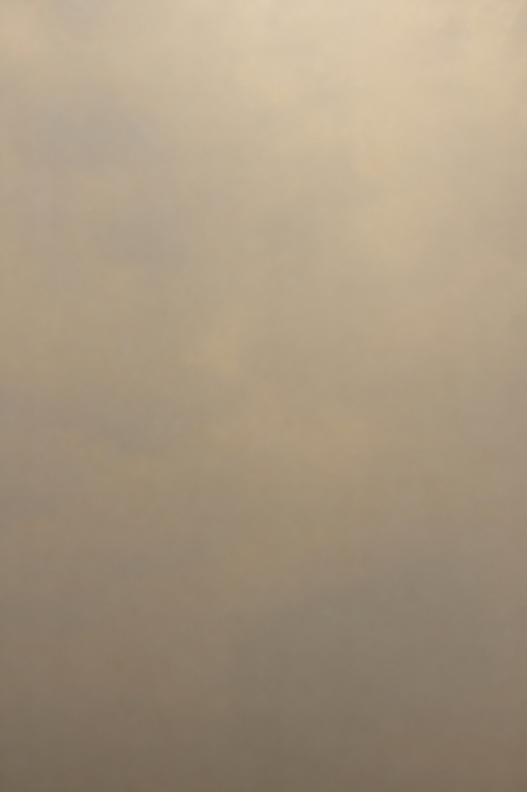
C1-A2_v1.png Original PNG · click to inspect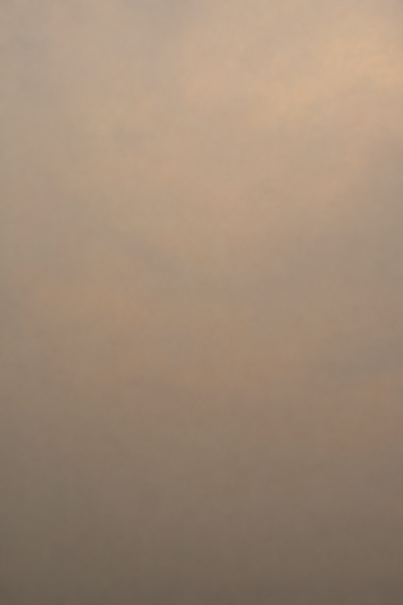
C1-A2_v2.png · Preferred candidateOriginal PNG · click to inspectC1-B · Palace in daylight
Replace with real photoWindow, column and other architectural details drift from the reference. Use the real palace photograph and relight in Photoshop.
C1-B_v1.png Original PNG · click to inspectC1-B_v2.png Original PNG · click to inspect C1-C · Army soldier
Detail reviewv2 adds the beret badge and keeps hands within frame. Uniform details and insignia require verification; reference photos do not establish current uniform standards.
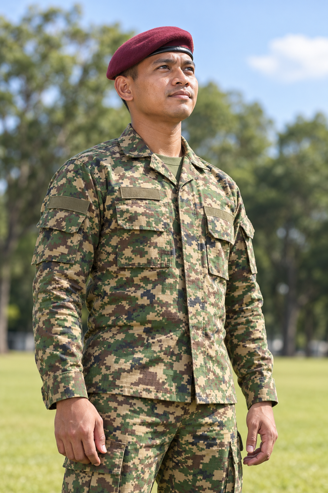
C1-C_v1.png Original PNG · click to inspect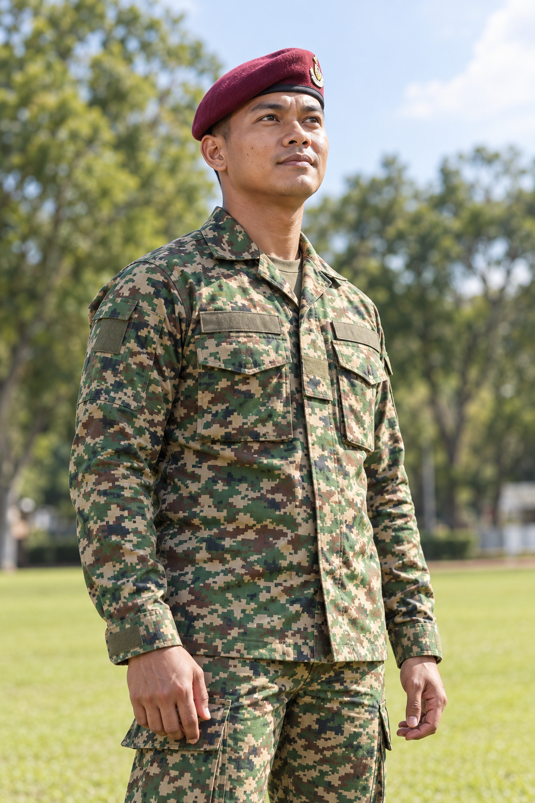
C1-C_v2.png · Preferred candidateOriginal PNG · click to inspectC1-D · Environmental researcher
Detail reviewBetter framing and a clear abstract graph. Inspect tiny screen/button marks at final placement size and remove anything that reads as lettering.
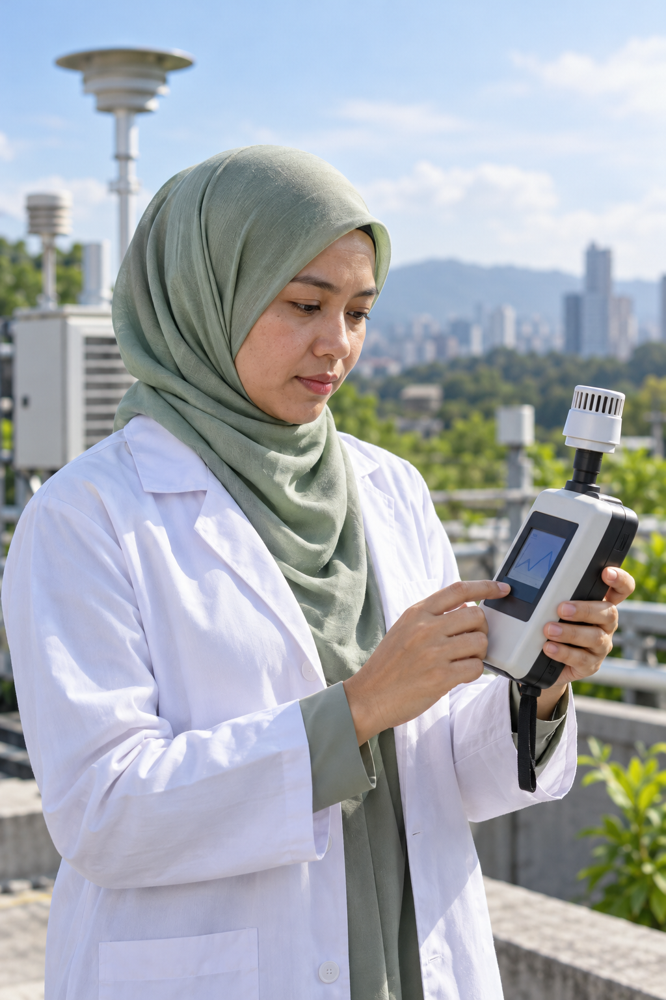
C1-D_v1.png Original PNG · click to inspect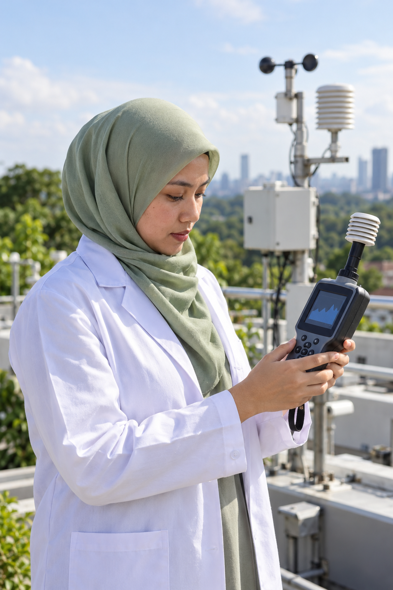
C1-D_v2.png · Preferred candidateOriginal PNG · click to inspectC1-E · Youths planting a tree
Detail reviewv4 shows all six hands separately with whole-figure framing. Soil contact still obscures some finger detail, so the strict 30-finger check is not certified. v1/v2 overlap hands; v3 hides one hand.
C1-E_v1.png Original PNG · click to inspectC1-E_v2.png Original PNG · click to inspectC1-E_v3.png Original PNG · click to inspectC1-E_v4.png · Preferred candidateOriginal PNG · click to inspect C1-F · Rainforest foliage
CandidateContinuous bottom border with an irregular upper edge against dark forest.
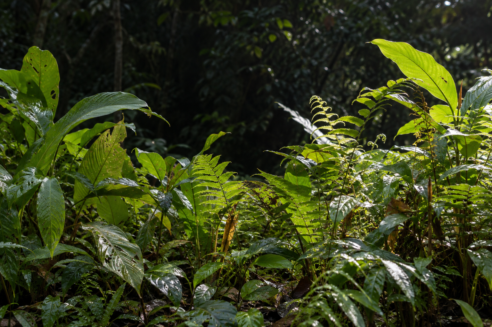
C1-F_v1.png Original PNG · click to inspect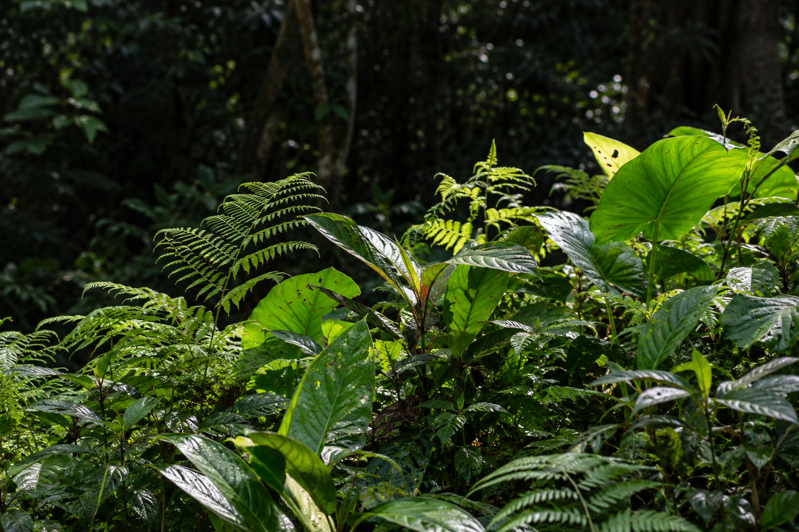
C1-F_v2.png · Preferred candidateOriginal PNG · click to inspectC1-G · C-130H Hercules
Detail reviewv1 shows four engines/propellers more clearly; v2 obscures an engine. Verify livery, geometry and markings before final use.
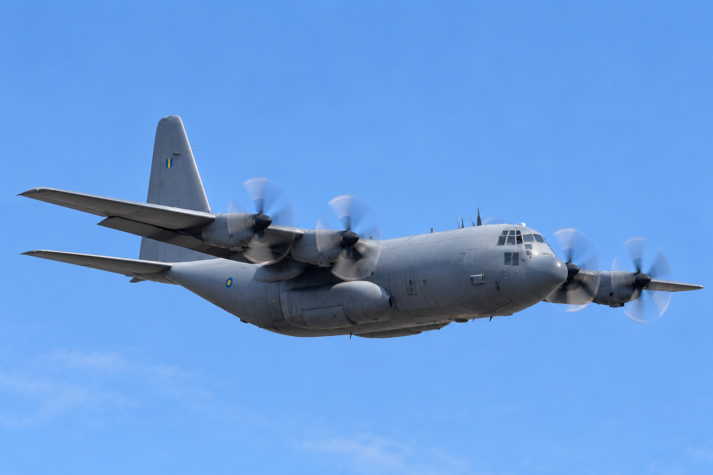
C1-G_v1.png · Preferred candidateOriginal PNG · click to inspect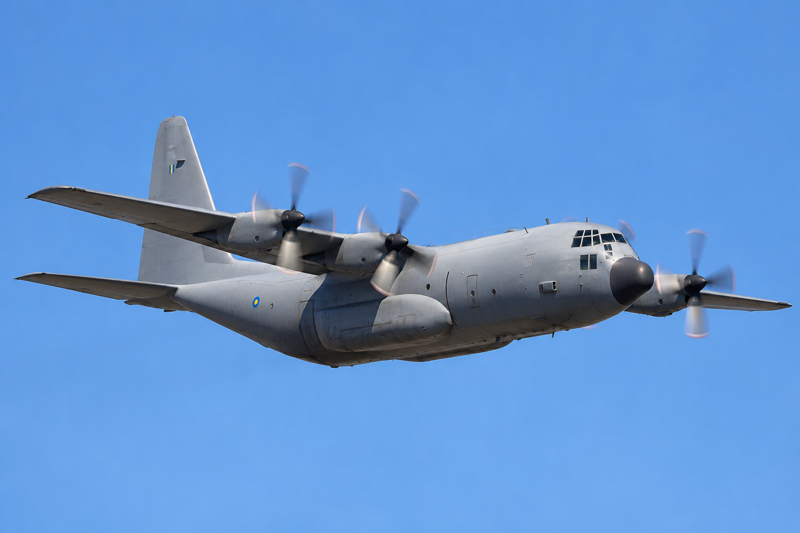
C1-G_v2.png Original PNG · click to inspectC3-A · Sunrise sky
Candidatev1 has the cleaner sun shape. Both need restrained grading to match the composite.
C3-A_v1.png · Preferred candidateOriginal PNG · click to inspectC3-A_v2.png Original PNG · click to inspect C3-A2 · KL skyline
Replace with real photoLandmark ordering is broadly retained, but facade and smaller-building details change. Use the real skyline source; its night lighting still needs the planned sunrise treatment.
C3-B · Palace at sunrise
Replace with real photoBoth alter architecture. Use the real palace photograph with non-generative relighting.
C3-B_v1.png Original PNG · click to inspectC3-B_v2.png Original PNG · click to inspect C3-C · Solar farm
CandidateMore restrained warmth and clearer rows than v1.
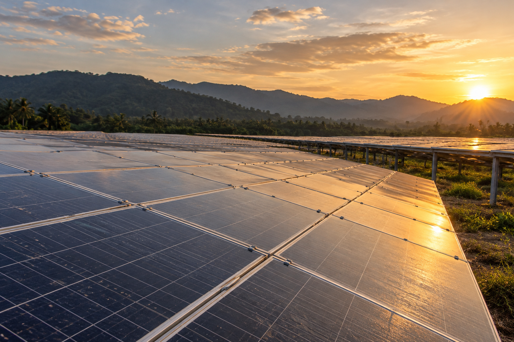
C3-C_v1.png Original PNG · click to inspect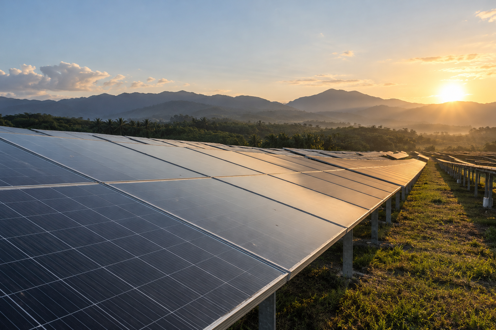
C3-C_v2.png · Preferred candidateOriginal PNG · click to inspectC3-D · Police officer at port
Detail reviewLess invented adornment than v1 and good framing. Badge/cap details remain approximate and need verification.
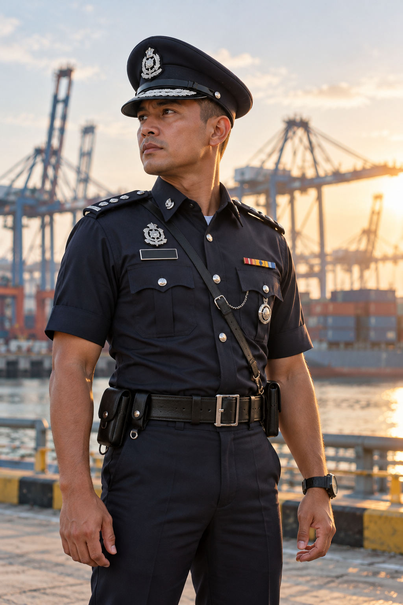
C3-D_v1.png Original PNG · click to inspect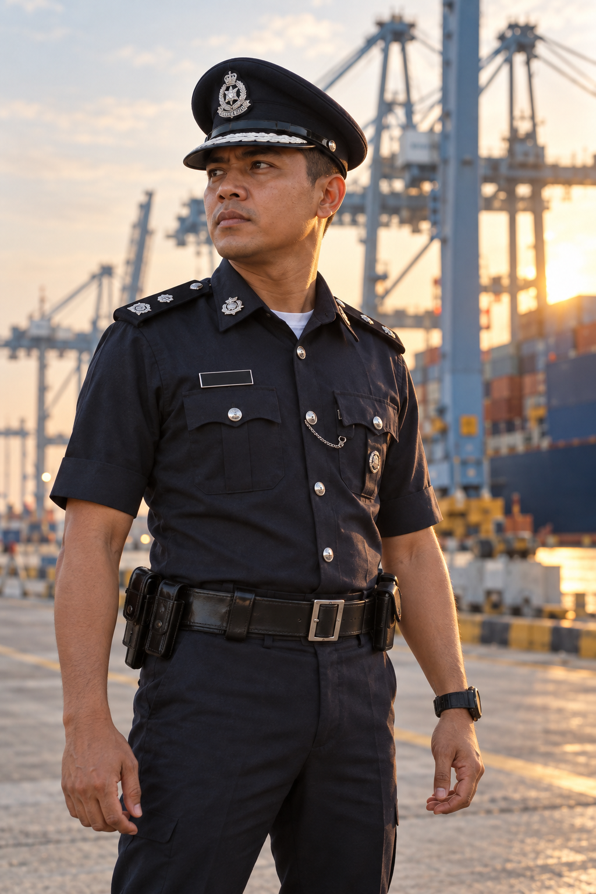
C3-D_v2.png · Preferred candidateOriginal PNG · click to inspectC3-E · Renewable-energy engineer
CandidateBoth arms are within frame and the single solar cell reads clearly; v1 crops an arm.
C3-E_v1.png Original PNG · click to inspect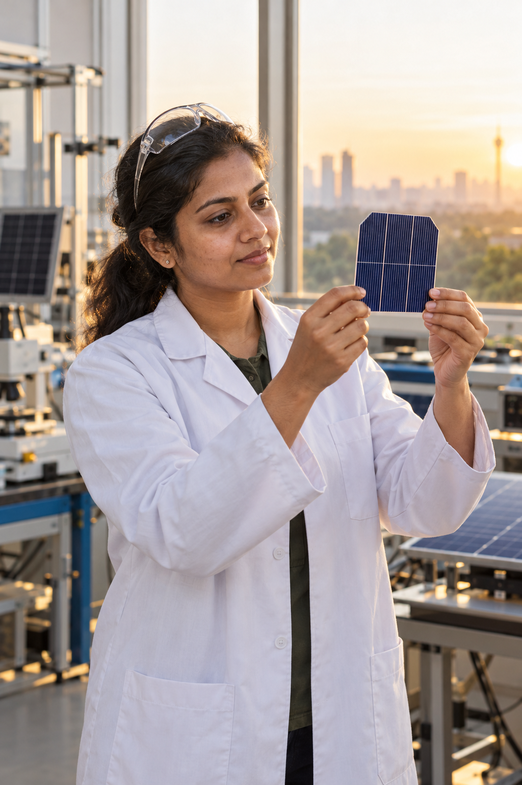
C3-E_v2.png · Preferred candidateOriginal PNG · click to inspect C3-F · Young professionals
CandidateFull figures, natural stride and more forward-looking gaze than v1.
C3-F_v1.png Original PNG · click to inspectC3-F_v2.png · Preferred candidateOriginal PNG · click to inspect C3-H · Port at sunrise (optional)
Detail reviewOptional asset included. Inspect and retouch small hull markings that may read as invented text.
C3-H_v1.png · Preferred candidateOriginal PNG · click to inspectC3-H_v2.png Original PNG · click to inspect